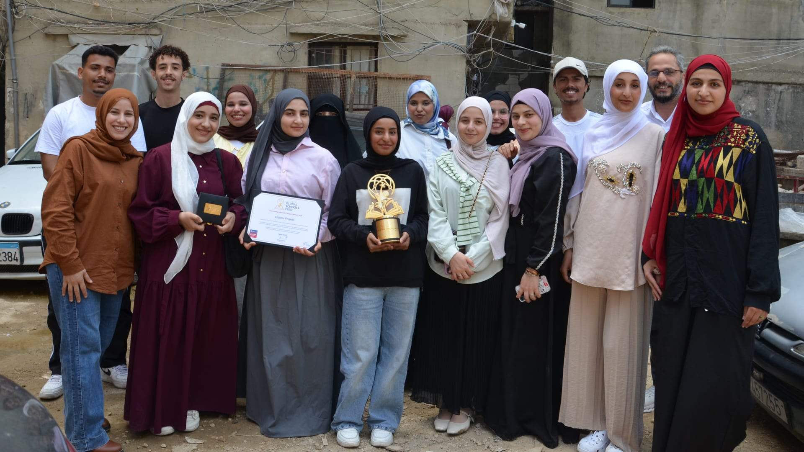

Grants programme project
The Alsama Project
Academic, professional and personal development for highly motivated young Syrian refugees in Lebanon.
Project overview
Learning for study, work and service
The Foundation made a four-year commitment beginning in 2022 to support The Alsama Project's Professional Group for highly motivated young Syrian refugees in Shatila Camp.
The Professional Group combines intense academic development with teamwork, communication, planning, organisation, time management, work experience and volunteer service.
We were thrilled when our partners at this project were awarded the highly prestigious Varkey Foundation's Global Schools Prize 2026.
Who the project serves
Young people building their next pathway
Serving young Syrian refugees in Shatila Camp, Beirut, this innovative programme nurtures the academic and professional skills of highly motivated and talented young people who would otherwise have no access to learning.
Partnership in practice
What the partnership enabled
Alongside classes in Arabic, English, Maths, Science and Computing, they are being equipped with skills and attributes to allow them to compete and excel in the 21st century jobs market. Lessons in teamwork, communication, planning and organisation/time management techniques are delivered alongside sessions on yoga, awareness and critical thinking, along with built in periods of work experience and volunteer service. The Foundation believes this highly contextualised scheme provides holistic and practically-oriented nurturing that moves well beyond the narrow restrictions of a traditional schooling approach, and is very proud to support The Alsama Project in their work.
As part of our belief in the importance of access to the natural environment and commitment to rounded approaches to learning and development of young people, The Altenburg Foundation financed Alsama's hiking programme for young Syrian refugees, giving young people the chance to leave the challenging confines of their urban camp settlement and head to the mountains of Lebanon for fresh air, exercise, challenge and personal development — broadening horizons in every sense.
Photo gallery
Learning, achievement and time outdoors
01 / 05
Partner organisation
Work led close to the community
Learn more about The Alsama Project and its wider work.
Visit The Alsama Project websiteGet involved
Support community-led opportunity
Support can help young people strengthen the academic, professional and personal foundations for their next step. Contact the foundation to discuss giving or partnership.